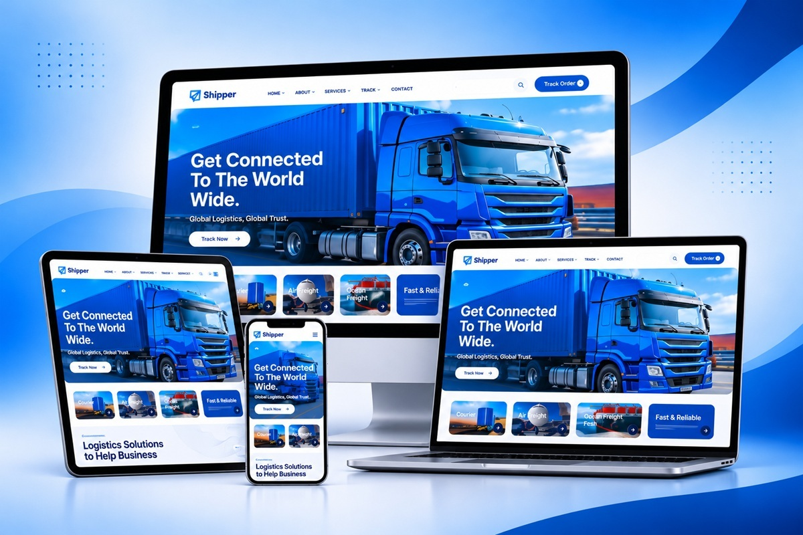
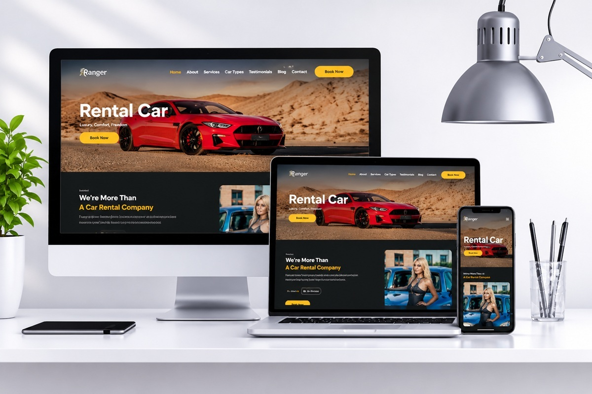
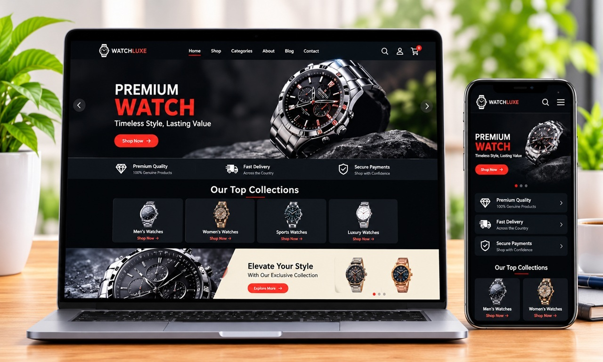
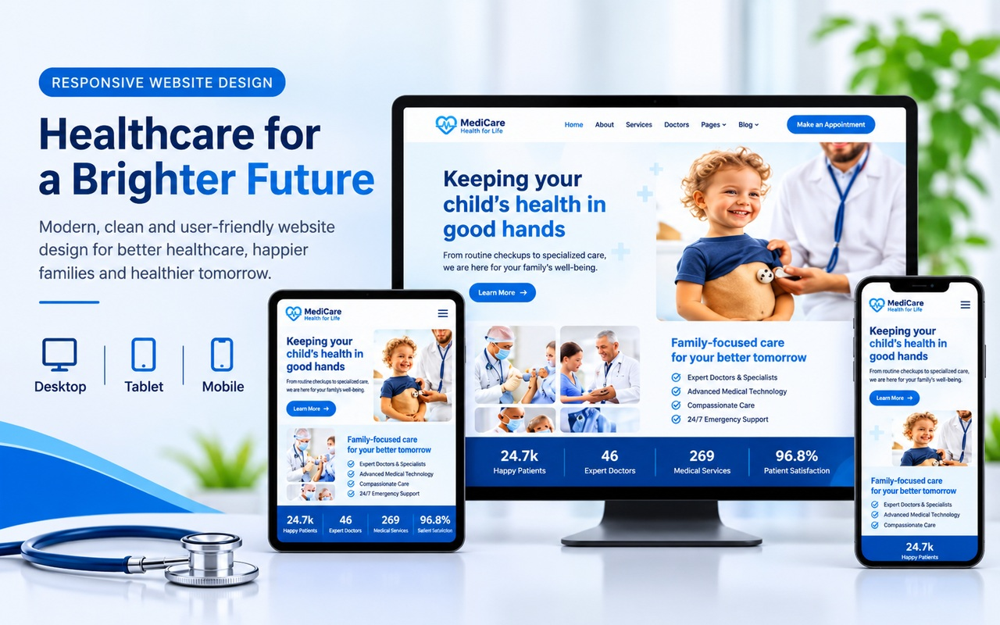
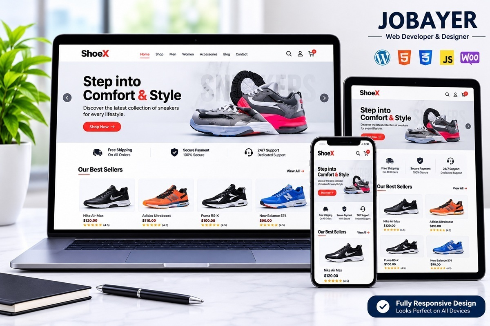
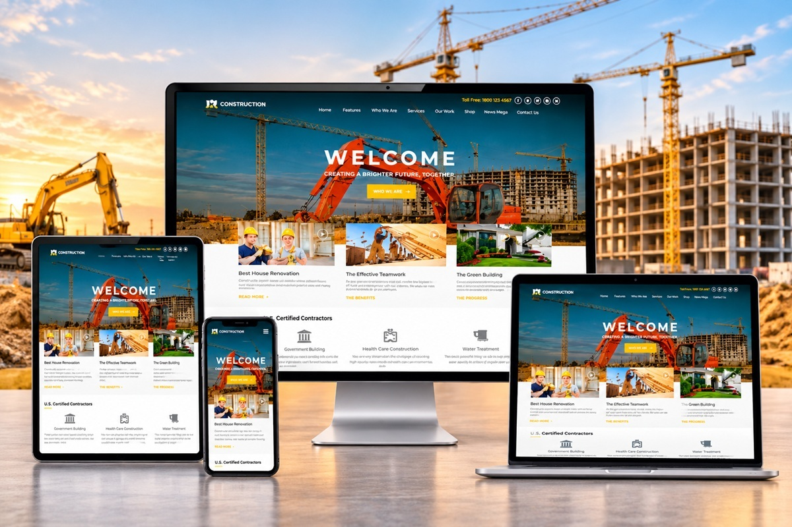
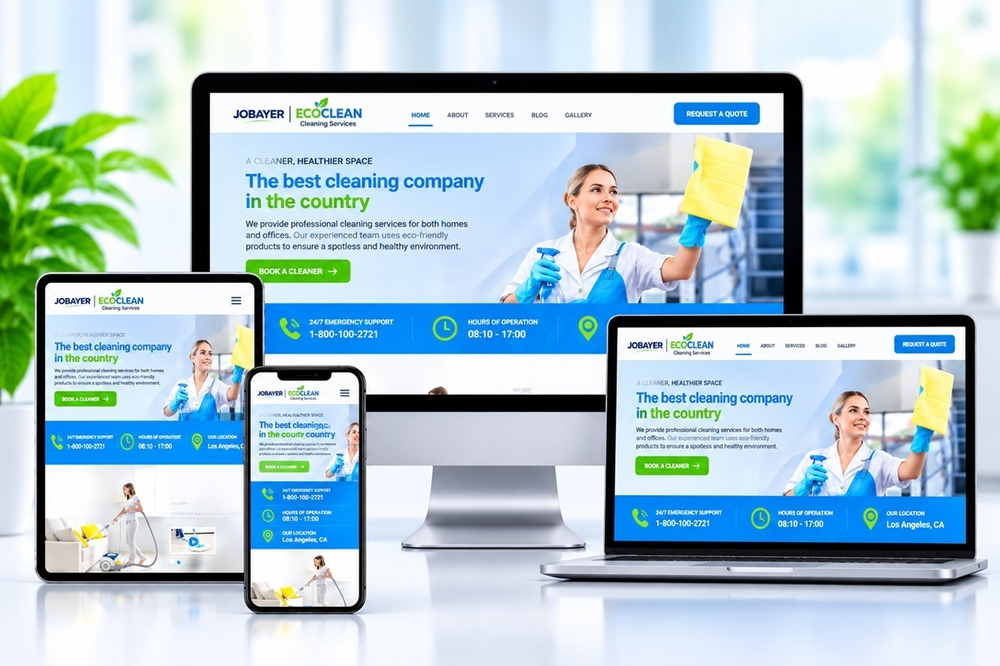
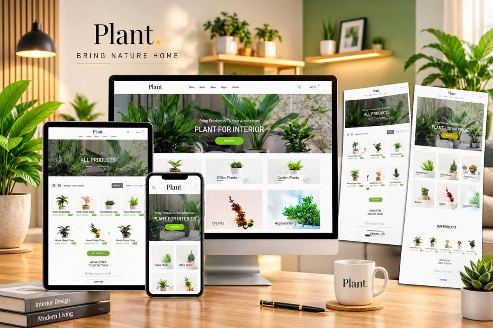
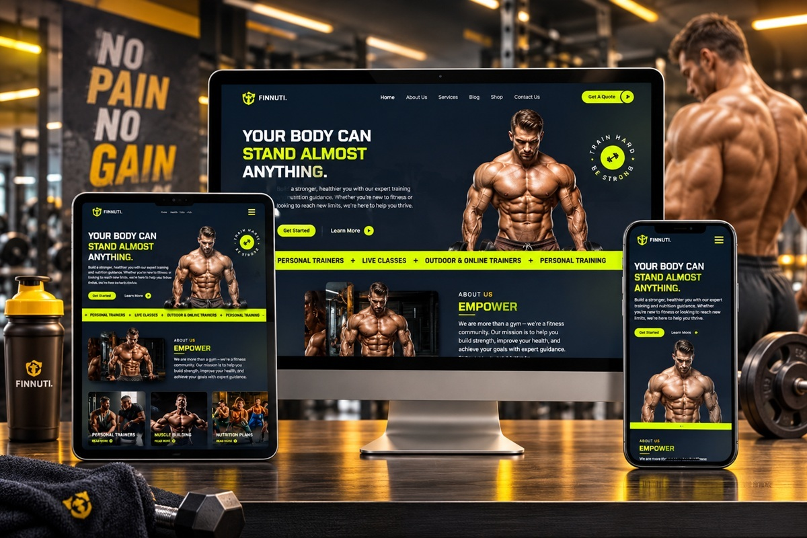
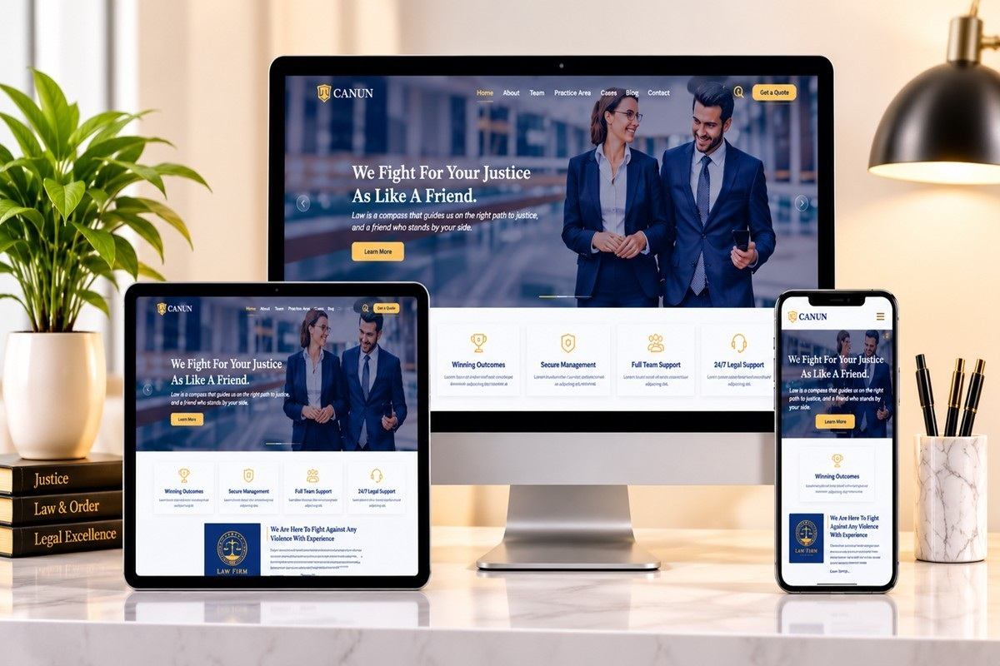

01
Website Design & Development
HOVER TO EXPLORE ↻01 / SERVICE
Website Design & Development
Modern, responsive websites for businesses, professionals and personal brands.
Discuss a project ↗HELLO, I'M MOHD JOBAYER HOSSAIN
I'm a Web Developer|
I design and develop clean, responsive and user-friendly websites that help businesses make a confident first impression and turn visitors into customers.
01 / ABOUT ME
They make it easier for people to understand your business, trust your brand and take action.
I'm Mohd Jobayer Hossain, a Web Developer, Web Designer and WordPress Specialist with 5+ years of freelance experience. I work across responsive website design, WordPress customization and e-commerce solutions.
From the first layout to the final responsive check, I focus on clear communication, practical solutions and details that make a website easier to use.
View my CV ↗02 / WHAT I DO
Practical website solutions, designed to look professional and work smoothly. Hover over a service card to explore.
Modern, responsive websites for businesses, professionals and personal brands.
Discuss a project ↗Custom WordPress pages, theme customization and Elementor-based website builds.
Discuss a project ↗Focused landing pages with clear messaging, responsive layouts and strong calls to action.
Discuss a project ↗E-commerce setup and customization to help showcase products and support online sales.
Discuss a project ↗03 / MY TOOLKIT
A practical mix of front-end, back-end and CMS skills to design, build and maintain websites for different business needs.
04 / SELECTED WORK
A selection of my website design projects across business, e-commerce and professional services. Each preview shows the responsive presentation prepared for the project.

Responsive logistics website design with shipment tracking, courier, air freight and ocean freight service sections.

Modern car rental website design with vehicle presentation, rental categories and booking-focused sections.

Premium watch store design with product collections, elegant presentation and mobile-friendly shopping layout.

Child-focused healthcare website design for clinics and specialist doctors, with clear service information.

Modern footwear online store design with product categories, shopping sections and responsive layouts.

Professional construction website design highlighting services, projects and business credibility.

Clean and professional service website design with clear service details and quote-focused calls to action.

Fresh plant store design with category browsing, product presentation and a calm visual direction.

Bold fitness website design showcasing training services, programs and gym brand identity.

Trust-focused law firm website design with practice areas, professional messaging and clear navigation.
Selected portfolio visuals. Open any image to view the full project preview. Contact me for project details or a similar website for your business.
05 / EXPERIENCE & LEARNING
Design and develop responsive websites for business, portfolio and e-commerce needs. Customize WordPress themes and Elementor layouts, configure WooCommerce stores, and maintain websites.
Freedom IT Institutions
Freedom IT Institutions
Political Science · Bangladesh Open University
06 / LET'S WORK TOGETHER
Tell me what you're building. Let's discuss how I can help you create a website that supports your business goals.